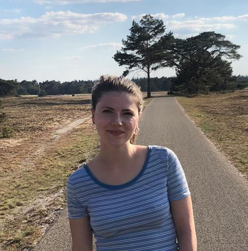

Hi!
I'm Stine, a fifth-year PhD student in Economics at the University of Zurich. My primary field is development economics. My research combines economic theory and field experiments in Sub-Saharan Africa to study signalling, social norms, and social learning.
My supervisors are Lorenzo Casaburi and Roberto Weber. Until March 2026, I was visiting Stanford Economics, hosted by Arun Chandrasekhar.
I hold an MSc in Econometrics and Mathematical Economics from LSE, and a BSc in Econometrics from the University of Amsterdam.
Write me: stine.helmke@econ.uzh.ch.